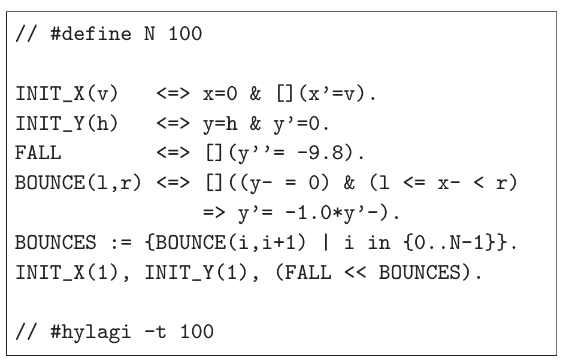
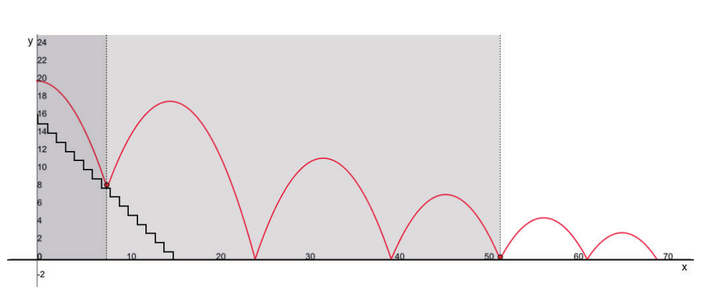
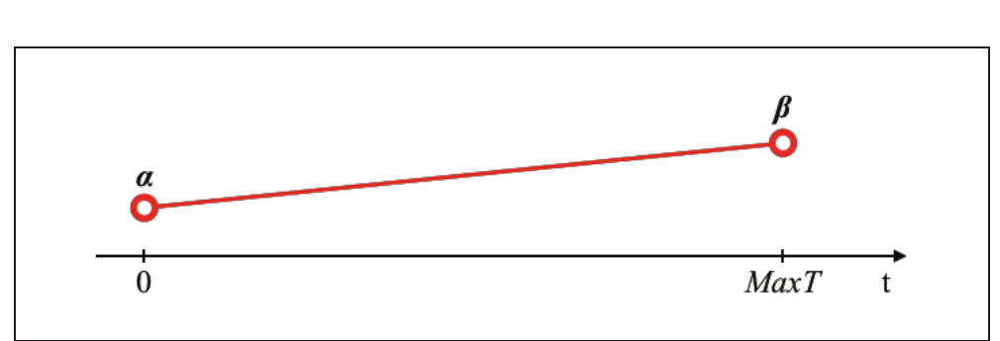
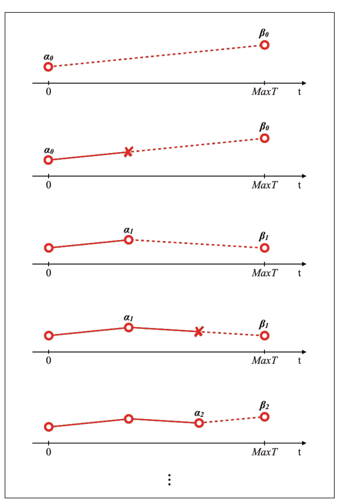
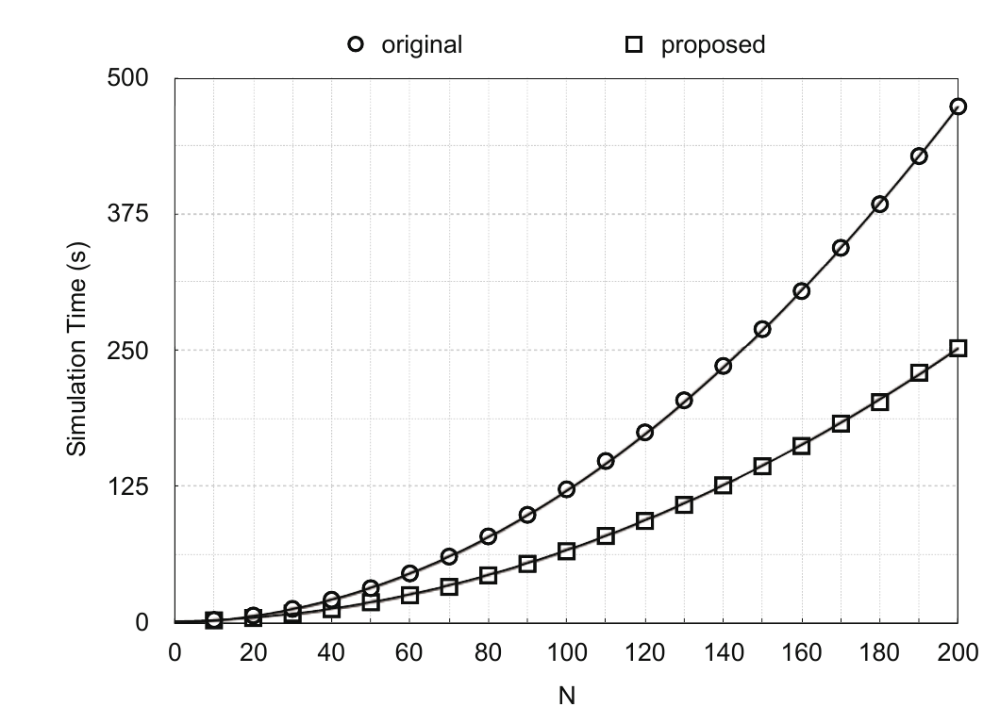

约束编程本科毕业论文
2019年6月
概要
仿真中的潜在事件越多，就越需要反复检查更多条件。但如果根据仿真的进展，可以确定某个条件不可能再次成立，是否就能安全地跳过它？针对混合系统建模语言 HydLa，我设计并实现了一种方法，利用变量的变化方向，移除不再需要检查的条件。
在评估模型中，这一方法在保持仿真结果不变的前提下，将运行时间缩短到了原算法的约一半。改进来自对问题结构的利用：减少仿真需要考虑的可能性。
这项研究形成的约束编程思路，如今也支撑着我在作品集中各项目的设计方法：先定义规则、优先级与边界，再推导出满足这些要求的解，而非直接指定每一个结果。
问题：可能性越多，运行时间越长
HydLa 通过数学和逻辑约束描述混合系统，即同时包含连续变化与离散事件的系统。模型无需逐一指定操作步骤，只需声明必须满足的条件，再由仿真器求出符合这些条件的行为。
在条件规则较多的模型中，仿真器需要反复检查大量候选项。即使某些条件已不可能再次成立，它们仍会留在候选集合中。随着模型扩大，这些不必要的检查会增加计算量。
模型：连续变化与离散事件的结合
弹跳的球是混合系统的一个易于理解的例子。在空中时，位置和速度连续变化，而在接触地面的一瞬间，会发生弹回这样的离散事件。温控器、汽车、机器人也是如此，虽然规模不同，但内部也存在相同的两种变化。
评估使用了一个球在水平方向移动、并在分段表面上弹跳的模型。每个区段都有一条条件规则：球到达该区域时便会反弹。增加区段可以让模型表达更多对象，同时也会增加仿真器需要检查的条件。

瓶颈：条件越多，运行时间越长
只有在条件满足时才生效的规则，称为守卫约束（guarded constraint）。在评估模型中，只有当球到达地面、且水平位置位于某一区段内时，该区段的反弹规则才会生效。
当区段数量从 10 增加到 200 时，原仿真器的运行时间大致按区段数量的平方增长。更大的模型包含更多物体、接触区域与潜在事件，可能会进一步放大这一问题。
调查——处理时间的96%集中在哪儿
对包含 100 个区段的模型进行性能分析后发现，FindMinTime 占总运行时间的 96%。这个例程通过反复计算所有候选守卫条件，寻找下一次可能最早发生的事件。
这明确了一个改进方向：安全地减少传递给 FindMinTime 的候选项。目标是在保持仿真结果不变的前提下，只跳过不再需要评估的可能性。
方法：移除不可能再次成立的条件
请想象一个沿着台阶跳下的球。如果球越过某一台阶并继续向前，那么这个台阶将不再影响球。看到图的人会立即忽略球身后的台阶。原来的算法则会继续检查每一个台阶。

难点在于证明：移除的守卫条件以后也不会再被需要。如果仅因条件当前为假就将其移除，一旦它再次变为真，仿真便可能在不报错的情况下产生错误结果。因此，所提出的方法利用了单调性：是否能保证某个变量在给定区间内持续增加或持续减少。
变化的方向不改变的情况
第一种方法适用于变量在整个仿真过程中都沿同一方向变化的情况。在分段表面模型中，球的水平位置一直增加。一旦球越过某一区段，该区段的守卫条件就不可能再次成立。模型检验技术可以在仿真开始前验证这一性质，从而在运行过程中安全地移除不再相关的守卫条件。

当变化方向发生反转时
许多系统不会无限期地沿同一方向变化：变量可能先增加，再反向减少。因此，论文提出了第二种方法：先假设变化方向，再用断言监测这一假设。一旦方向改变，就重新启动约束削减过程，恢复上一单调区间中移除的守卫条件。本项目完成了这一方法的设计，但尚未实现或评估。

结果——将评估模型的运行时间大约减半
我实现了适用于全程单调变量的方法，并在分段表面模型中进行评估。两种算法的运行时间都随区段数量增加而上升，但所提出的方法始终耗时更少。拟合曲线的最高次项系数从 1.1463 降至 0.6083。在这一基准测试中，仿真的总运行时间缩短了约一半。
这一结果仅适用于本次基准测试。这种方法适合以下模型：包含大量带守卫条件的对象，变量的变化方向可以被证明，而且某些守卫条件会在运行过程中永久失去相关性。这并不意味着所有 HydLa 模型都能快一倍。

从这项研究中获得的视角
这项研究利用系统行为的已知性质，减少仿真器需要考虑的可能性。在保持结果不变的同时缩小搜索空间，正是约束编程的优势之一。
实现与评估覆盖了持续沿同一方向变化的变量。处理方向反转的方法仍处于设计阶段，有待评估。除了单调性，还可能利用其他性质识别不必要的约束。
这段经历影响了我当前的研究兴趣：设计 AI 搜索解时应遵循的条件与边界。面对复杂结果，明确哪些可能性可以安全地忽略，与决定需要计算什么同样重要。
Takafumi Horiuchi, Kazunori Ueda, “Dynamic Reduction of Guarded Constraints for the Hybrid Systems Modeling Language HydLa,” 2019 Annual Conference of the Japanese Society for Artificial Intelligence (33rd), 2019. DOI: 10.11517/pjsai.JSAI2019.0_1E3OS3b02